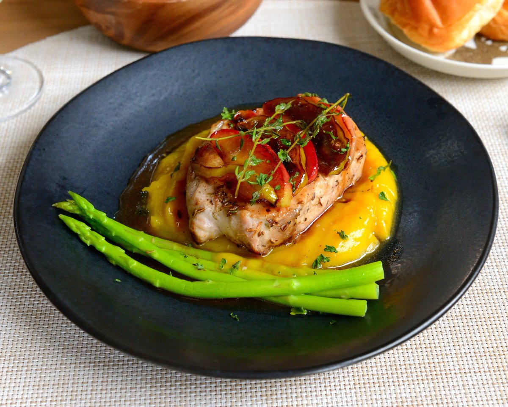
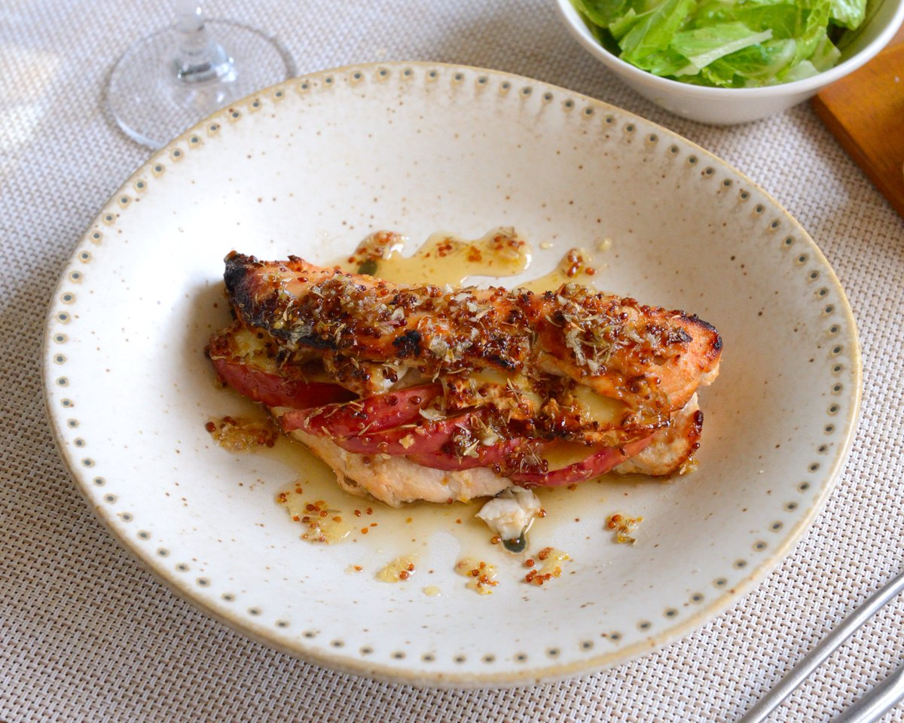
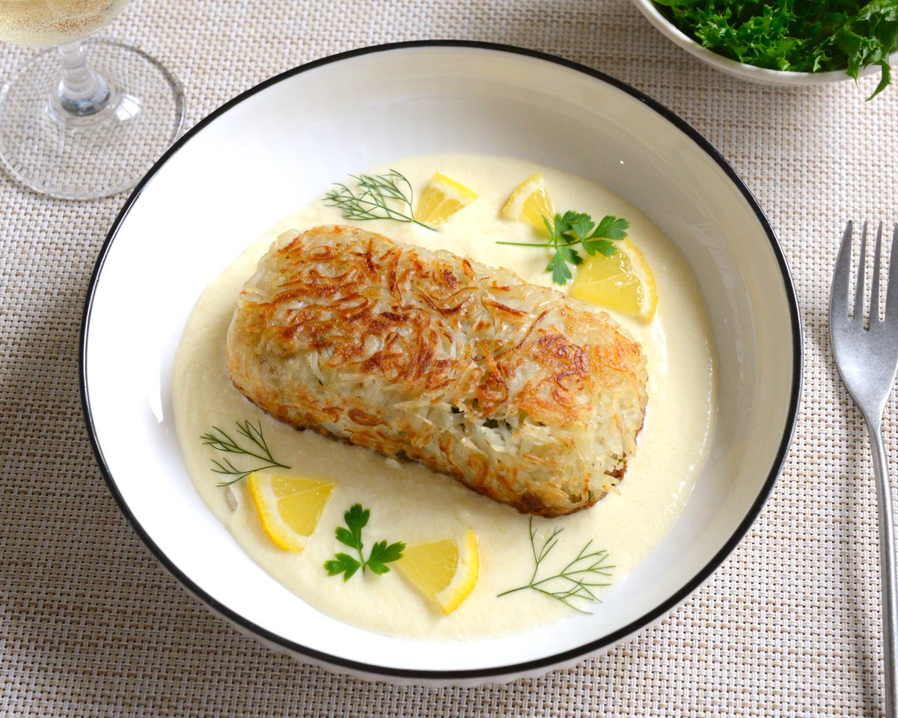
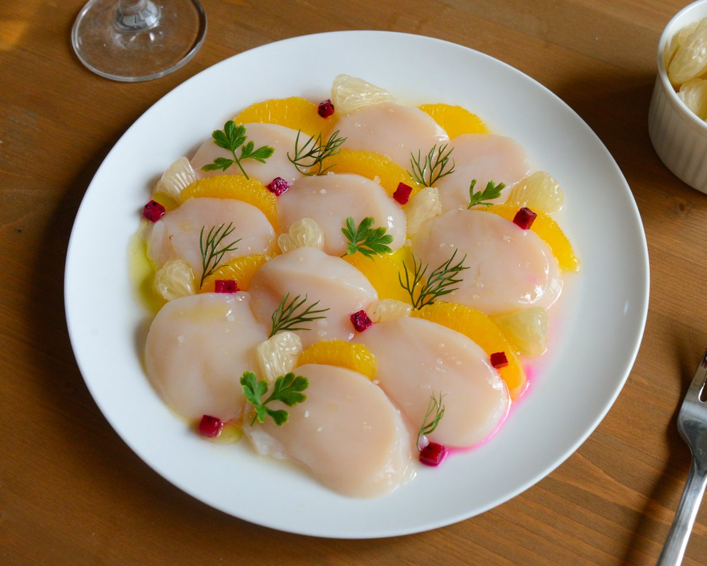
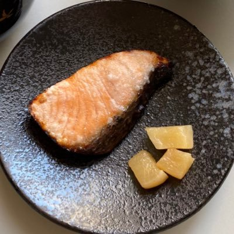

鲜虾🍤鱼板🍥面🍜（❤️ver.）
@AsdQWD358224
RT @monet_kitchen: 2024 我最喜歡的四道菜
不意外的法國菜佔三道，法國菜真的最容易端出漂亮又美味的作品 -- 假如成功的話。像鮭魚威靈頓這道就做了三次。另一道是日式的橙香生干貝，最好的食材、簡單手法、雅緻的擺盤
預告明年會減少作品，大概每週一道，我要…





monet_kitchen 莫內廚房
@monet_kitchen
2024 我最喜歡的四道菜
不意外的法國菜佔三道，法國菜真的最容易端出漂亮又美味的作品 -- 假如成功的話。像鮭魚威靈頓這道就做了三次。另一道是日式的橙香生干貝，最好的食材、簡單手法、雅緻的擺盤
預告明年會減少作品，大概每週一道，我要出去玩，出去吃好吃的東西 PS 許願不表示做得到 😂 https://t.co/HKso5TQN6v